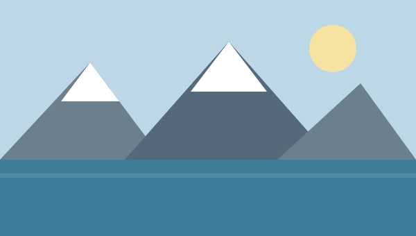

Diez días recorriendo la Patagonia
Salimos de Buenos Aires un martes a la madrugada con la idea de llegar hasta El Chaltén por la Ruta 40. Lo que en el mapa parecía una línea recta terminó siendo el viaje más largo y más lindo que hice en mi vida.

Fuimos cuatro, con una carpa prestada y un presupuesto bastante ajustado. Dormimos en campings municipales, cocinamos casi todos los días y solo nos dimos algunos gustos puntuales cuando el cansancio lo pedía.
El Viaje
Los primeros tres días fueron pura ruta: kilómetros de estepa, viento cruzado y estaciones de servicio separadas por más de doscientos kilómetros. Aprendimos rápido a cargar nafta siempre que apareciera un surtidor, sin importar cuánto quedara en el tanque.
Al cuarto día apareció la cordillera y el paisaje cambió por completo. Hicimos la caminata a la Laguna de los Tres, siete horas de subida que terminaron frente al Fitz Roy con un cielo completamente despejado.
La Comida
El cordero al asador de El Calafate fue, sin discusión, el mejor plato del viaje. Lo comimos en una parrilla chica, atendida por sus dueños, después de un día entero sobre el glaciar.
El resto de los días nos las arreglamos con guisos hechos en el calentador y con pan casero que comprábamos en las panaderías de pueblo. Después de doce horas de caminata, cualquier cosa caliente se siente como un banquete.